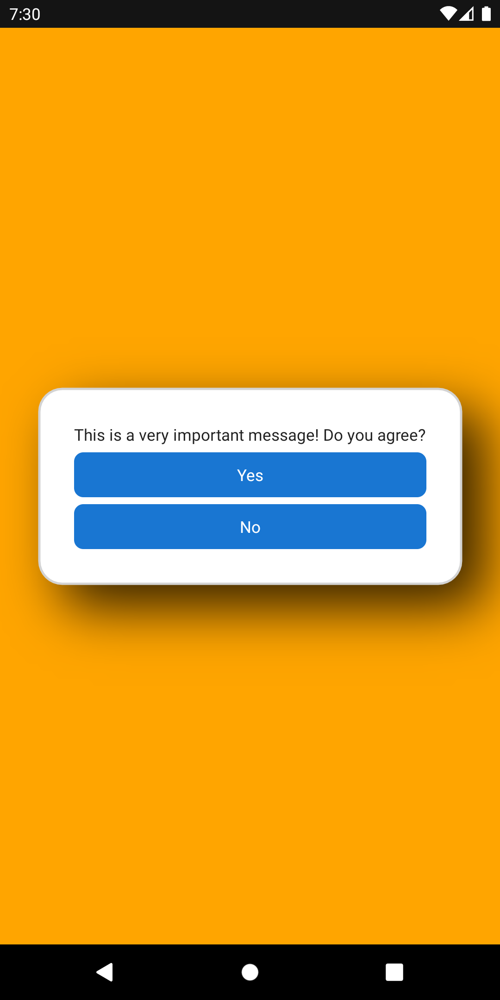
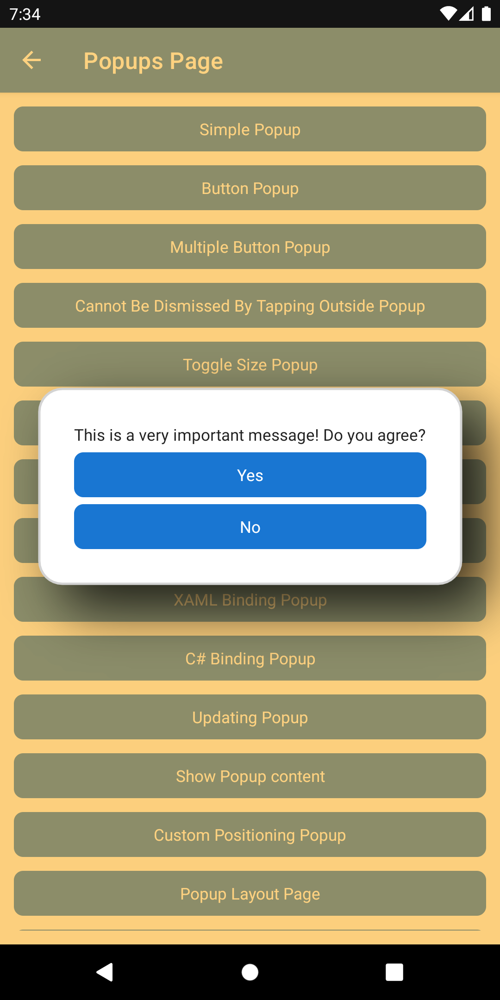
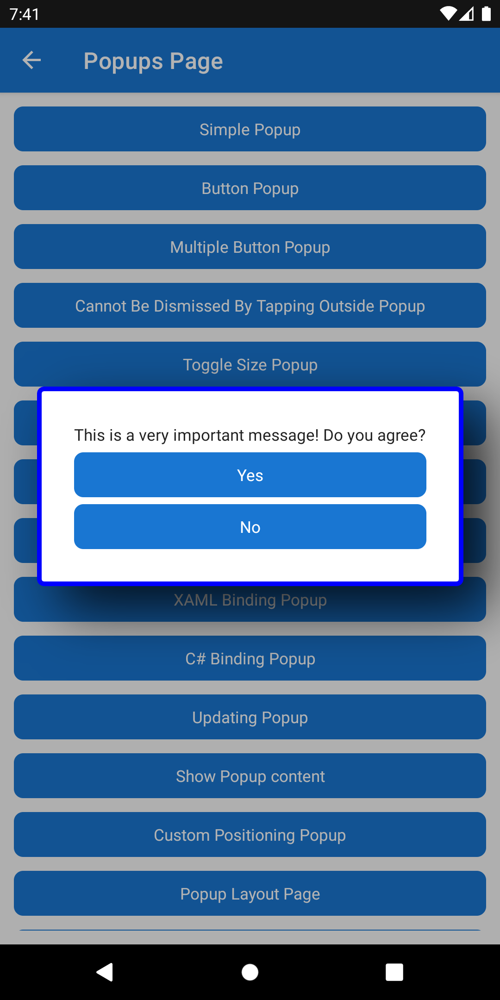
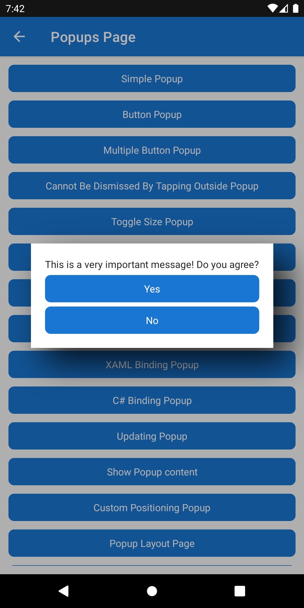
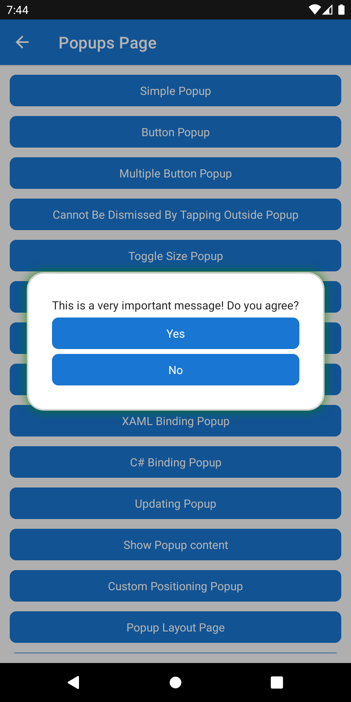

PopupOptions - Customizing the popup behavior and appearance
The PopupOptions class provides the ability to customize the appearance and behavior of the Popup.
All of the examples in this page make use of the SimplePopup example that is covered at Popup.
Controlling whether the user can dismiss the Popup
PopupOptions provides the CanBeDismissedByTappingOutsideOfPopup property which can control the whether the user can tap or click outside of the Popup bounds to dismiss the currently displayed Popup. This is true by default. The following example shows how to prevent a user from being able to dismiss the Popup.
await this.ShowPopupAsync(new SimplePopup(), new PopupOptions
{
CanBeDismissedByTappingOutsideOfPopup = false
});
Note
It is possible to cache PopupOptions to reuse on future navigation actions or with other popups that share the same configuration, that would prevent unnecessary allocations.
Customize the Overlay Color
PopupOptions provides the PageOverlayColor property which can control the Color that overlays the current page. The following example shows how to set the PageOverlayColor to orange.
await this.ShowPopupAsync(new SimplePopup(), new PopupOptions
{
PageOverlayColor = Colors.Orange
});

The above Popup renders with an opaque background, to control the opacity modify the alpha property of a Color. The following example shows how to
await this.ShowPopupAsync(new SimplePopup(), new PopupOptions
{
PageOverlayColor = Colors.Orange.WithAlpha(0.5f)
});

Customize the Popup Border
PopupOptions provides the Shape property which can control the appearance of the border around the content displayed in the Popup. The following example shows how to set the border to be a rounded rectangle with a corner radius of 4 and a stroke of blue.
await this.ShowPopupAsync(new SimplePopup(), new PopupOptions
{
Shape = new RoundRectangle
{
CornerRadius = new CornerRadius(4),
Stroke = Colors.Blue,
StrokeThickness = 4
}
});

For more details on how to customize the Shape property see .NET MAUI Shapes.
Disable the Popup Border
In order to disable the border on a Popup, simply set the Shape property to null. The following example shows how to achieve this
await this.ShowPopupAsync(new SimplePopup(), new PopupOptions
{
Shape = null
});

Customize the Popup Shadow
PopupOptions provides the Shadow property which can control the shadow which is applied to the Popup. The following example shows how to set the shadow to be green with an opacity of 80%.
await this.ShowPopupAsync(new SimplePopup(), new PopupOptions
{
Shadow = new Shadow
{
Brush = Brush.Green,
Opacity = 0.8f
}
});

For more details on how to customize the Shadow property see .NET MAUI Shadow.
Disable the Popup Shadow
In order to disable the border on a Popup, simply set the Shape property to null. The following example shows how to achieve this
await this.ShowPopupAsync(new SimplePopup(), new PopupOptions
{
Shadow = null
});
Properties
| Property | Type | Description |
|---|---|---|
CanBeDismissedByTappingOutsideOfPopup |
bool |
Gets or sets a value indicating whether the popup can be dismissed by tapping outside of the Popup. On Android - when false the hardware back button is disabled. |
OnTappingOutsideOfPopup |
Action |
Gets or sets the Action to be executed when the user taps outside the Popup. |
PageOverlayColor |
Color |
Gets or sets the Color of the overlay behind the Popup. |
Shape |
Shape |
Gets or sets the border shape for the Popup. Set this to null to remove any border styling. |
Shadow |
Shadow |
Gets or sets the Shadow of the Popup. Set this to null to remove any shadow. |
Examples
You can find an example of this feature in action in the .NET MAUI Community Toolkit Sample Application.
API
You can find the source code for PopupOptions over on the .NET MAUI Community Toolkit GitHub repository.